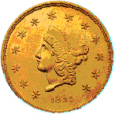

HISTORY of COLUMBIA.


A Simple History.
See the individual building histories for better "Time Line" information
HISTORY of COLUMBIA.

A Simple History.
See the individual building histories for better "Time Line" information
The first year was almost the last for the new town. Water, indispensable for mining placer gold, was in short supply. The area had no natural streams, only gulches carrying runoff from rain and snow. So, in June 1851, the Tuolumne County Water Company was formed to bring water into the area. The Tuolumne County Water Company's rates were high, so the miners formed the Columbia and Stanislaus River Water Company in 1854 to build a 60 mile aqueduct to supply the mines. The new system was not fully completed until 1858, when the more easily worked gold deposits had been exhausted and the miners were beginning to move out. Because of this, the Tuolumne County Water Company managed to acquire the new system, which cost over $1 million, for under $150,000.
Hydraulic mining DID NOT happened at Columbia. Using monitors, or nozzles, to shoot water at high pressure, where miners blasted loose the gold bearing gravels and washed out the gold would have been difficult here. It is possible that dams and methods for forced erosion did the work around Columbia proper. The main parking lot and other depressed areas were possibly 30 feet or more below the earth's surface before the miners arrived.
Meanwhile, Columbia's tents and shanties were being replaced with more permanent structures. Streets were laid out, and by the end of 1852 more than 150 stores, shops, saloons, and other enterprises were going strong. There was also a church, a Sunday School, a Masonic Lodge, and even a branch of the Sons of Temperance.
Wood had been the main construction material used in these buildings. In 1854, fire, the scourge of many mining towns, destroyed everything in Columbia's central business district except the one brick building. When the town was rebuilt, locally produced red brick was used for thirty buildings. Known as "Fire Proofs" these buildings were constructed of iron doors, iron window shutters, as well as bricks and rocks (rubble). Steel and bricks were also used on the roofs for additional fire protection.
In July of 1855 the New England Water Company provided piped water for fire fighting and domestic use. Seven cisterns, each with a capacity of about four thousand gallons, were built under the streets. Some still store water for fire fighting. (Columbia Gaztte - January 12, 1853)The early pipes were used until 1950, when the state installed a new water system.
In 1857 a second fire destroyed all the frame structures in the 13-block business district, as well as several of the brick buildings. Rebuilding began immediately, and the citizens decided to form a volunteer fire department. In 1859 the fire department acquired the Papeete, a small, fancifully decorated fire engine. Its arrival in Columbia was the occasion for much fanfare and celebration. A year later the Monumental, a larger hand pumper, was added.
After 1860, when the easily mined placer gold was gone, the town began to decline. In the 1870s and '80s many of the vacated buildings were torn down and their sites mined, and Columbia's population dropped from a peak of perhaps six thousand to about five hundred.
The town continued to survive, but not prosper for many years. During the 1920's ideas began to arise concerning the inclusion of Columbia into the new and growing California State Park System.
A very serious but ultimately unsuccessful attempt to make Columbia a State Park occurred in 1934. By this time the town was quite run down. Many of the structures had become public nuisances and were falling down. The Legislature passed a bill in 1945 appropriating $50,000 to be matched by public subscription for the acquisition of lands and buildings in the old business section of Columbia. Thus, was Columbia State Historic Park born.
Columbia was only one of hundreds of settlements that sprang up during the exciting years when the cry of "Gold!" brought Argonauts from all over the world to seek their fortunes in California. Located in the heart of the Mother Lode, a mile wide network of gold bearing quartz that extends 120 miles along the western edge of the Sierra Nevada, from Mariposa northward to Georgetown, Columbia yielded $87 million in gold at 1860's prices.
Unlike many of these settlements, which have long since succumbed to fire, vandalism, and the elements, Columbia has never been completely deserted. Through the years it has retained much the same appearance as when miners thronged its streets. So, recognizing an opportunity to preserve a typical Gold Rush town as an example of one of the most colorful eras in American history, the State Legislature in 1945 created Columbia State Historic Park.

{kind=link}